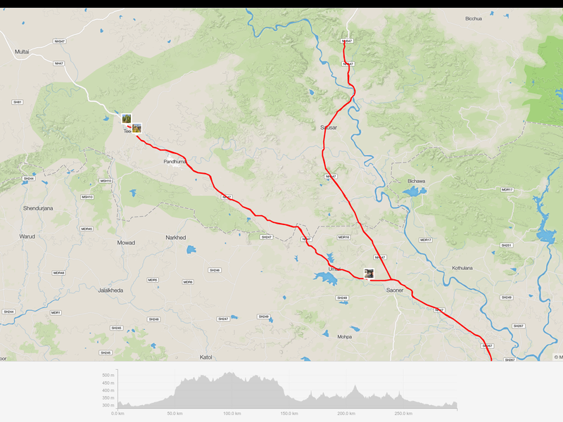

Yes it was tough, yes I took my time, yes I finished strong. In fact my last 50km were my fastest.

Nov
15
15
A tough 300km Brevet!
Sep
26
26
Numbness in hand while cycling
Long rides will result in numbnesson. With understanding and effort, it can be avoided.
Sep
19
19
At 50 the cycle continues
At 50 I can afford to not speculate on what will be. At 50 I can say, What will be will be...
Sep
10
10
Aasim in Drexel
Aasim's journey to Drexel university was a series of coincidences and mishappenings rather than something in the making for long.

Aug
19
19
Hello Lektor
Lektor is more of a framework. You can model your own blog posts and render them with the templates you want to use.
Aug
15
15
Bye Bye WordPress
WordPress first became boring and then too expensive for a simple personal website. So I decided to switch to a static site.